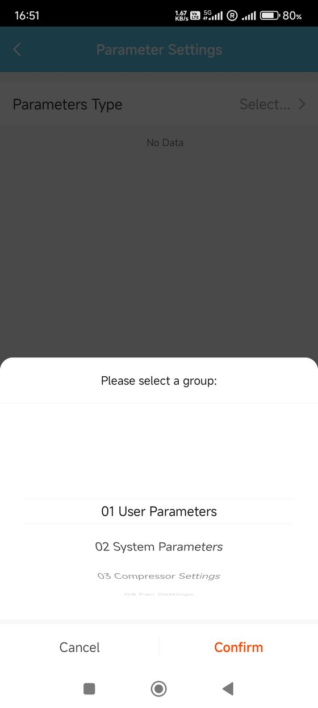
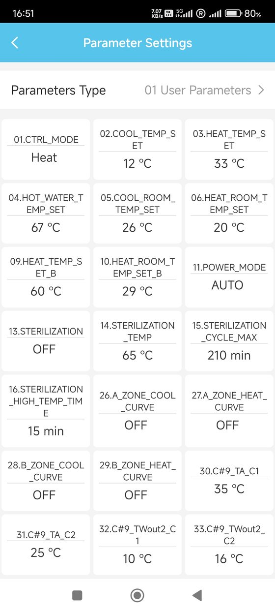
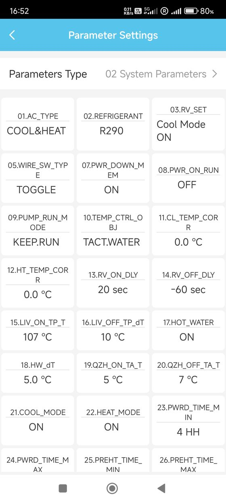
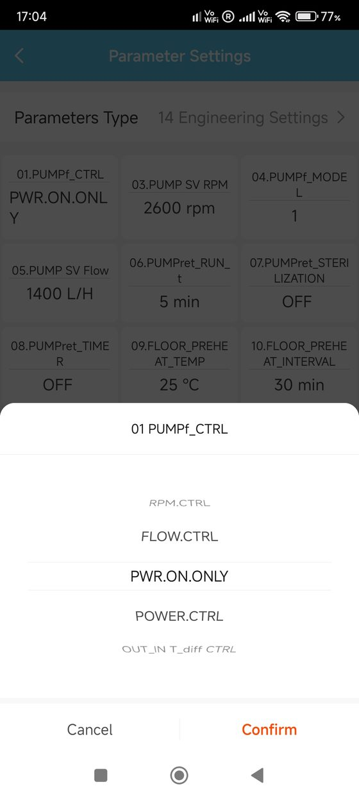

1 What this app is
The Huilian Smart phone app pairs to the heat pump over Wi-Fi and mirrors the wired controller screen-for-screen. Anything below can be done on either device. There are three depths of menu, color-coded throughout this guide by who they are meant for.
🟢 User level
User Day-to-day: turn zones on/off, set temperatures, hot water, timers, holiday mode. Safe to change anytime. No password.
🔵 Installer level
Installer Behind Advanced Para. (password 123456): how the system is built — zones, pump, backup heaters, DHW priority, sensors, smart grid. Change only when commissioning.
🟠 Factory level
Factory Compressor, fan, expansion-valve, defrost and protection calibration. Do not change — wrong values can damage the compressor or void warranty.
- The Factory groups (Compressor, Fan, EEV/EEVm/EEVs, Defrost, Protection, Working Frequency, Testing) are calibration constants. The values listed are this unit's defaults for reference only.
- When you leave Advanced settings, scroll to the bottom and press Logout so the password is required again next time.
- The app can only reach the unit while both phone and controller are on the same Wi-Fi / cloud account.
3 Complete menu map
The full navigation tree of the app / controller. Three top-level areas hang off the buttons above: Query (🔍), Mode, and the Set menu (⚙️). The Set menu is where almost everything lives, ending in Advanced Para. which unlocks the 16 parameter groups documented further down.
- Current ErrorActive faults right now
- StatusLive sensor & output readout
- VersionBoard / controller firmware
- ECMEnergy metering (24h / 30d / 12m / 10y)
- EEBUSHuawei green-power link (optional)
- AutoUnit picks heat or cool by ambient
- CoolCooling only
- HeatHeating only
- Zone On/Off + temperature slider
- Hot-water On/Off + target temp
- Display SettingLanguage · brightness · lock · timeout · key sound
- Time & Date
- Timer
- Timer On/Off → Daily / Weekly / Cancel
- Sterilization Timer
- Silent Timer (Level 1 / 2)
- DHW Pump
- Wi-FiPair / Reset Wi-Fi (Smart mode)
- User ParametersSetpoints (also in Advanced group 01)
- Manual Defrost
- History Errors
- Force Tank Heater / Force DHW / Force I-heat / Force AHS / Floor Dry-up
- Holiday ModeAway / Home
- Advanced Para. 123456
- Parameter Settings → 16 groups ↓
- Manual Test · Modify Password · Reset
- Ability / Pump / Cool / Heat / Hotwater Test
- Recycle Refrig · Floor Preheat · Floor Dryup Timer
- Logout
4 Home screen & daily use
The main screen shows one tile per active zone plus a hot-water tile. Tap the number to slide the
target temperature; tap the power icon to switch that zone. Which layout you see depends on how the system was
configured (parameter 35.PANEL_CTRL / WIRE_SW_TYPE).
The four possible home layouts
1 · Single zone (water) + hot water — one water-temperature zone and DHW. The simplest.
2 · Single zone (room) + hot water — the controller reads room temperature and runs to a room target. The controller must be mounted indoors.
3 · Dual zone (A water + B room) + hot water — e.g. radiators on A, underfloor room-temp on B.
4 · Dual zone (A water + B water) + hot water — two water-temperature loops.
Status icons you may see on Home
🔒 Screen lock — tap to unlock before operating (set under Display).
⏱️ Timer active — a daily/weekly schedule is in effect.
🔇 Silent — quiet mode is running (fan/compressor capped).
🏝️ Holiday — away or home holiday program active.
♨️ Sterilization — anti-Legionella cycle running.
17.HOT_WATER must be ON, then tap the hot-water tile on Home.5 Query menu 🔍 User
Read-only diagnostics — nothing here changes how the unit runs.
Current Error & History Errors
Current Error lists faults happening now; tap one for detail. Faults that meet the reset condition can be cleared here.
History Errors (under the Set menu) keeps a log of past faults with time stamps — useful for service calls. Clearing it wipes the whole log, so be careful.
Version
Shows the mainboard and controller firmware strings. Service will ask for these when diagnosing. Example families on this platform: mainboard X1.HL087A…, controller X1.HD016A…
ECM — Energy metering
History of electricity used and heat delivered over the past 24 h / 30 d / 12 m / 10 y, with efficiency. Abbreviations:
CQ / HQ / WQ | Cooling / Heating / Hot-water capacity delivered |
CP / HP / WP | Electricity consumed in Cool / Heat / Hot-water mode |
EER / COP / W-COP | Efficiency ratio for Cool / Heat / Hot-water |
EEBUS (optional)
Links the heat pump to a Huawei SmartAssistant / FusionSolar system so it prefers free/cheap PV electricity (the "OHPCF" function). Needs the EEBUS module and specific firmware. Note: it conflicts with Smart Grid — enable only one.
6 Set menu ⚙️ User
Everything that isn't a parameter number. These are the items reached directly from the gear icon.
Display Setting
Language, screen brightness, screen-lock on/off, screen timeout (set 0 = always on), and key-press sound.
Time & Date
Set clock and calendar. Timers and schedules rely on this being correct.
Timer → On/Off
Daily (up to 5 groups: start, end, mode, temp) or Weekly schedule; Cancel Timer clears all on/off timings at once. An invalid group (same start/end, crossing midnight, or out-of-range temp) is ignored.
Timer → Sterilization
Schedule the weekly anti-Legionella heat-up (e.g. Fri 21:00). The temperature/duration come from user params 14–16. Manual on/off overrides the timer.
Timer → Silent
Quiet mode on a schedule, Level 1 or Level 2 (L2 caps fan/compressor speed lower than L1). Two time groups.
Timer → DHW Pump
Schedules the domestic-hot-water recirculation pump so a hot tap is instant during set windows.
Wi-Fi
Shows Wi-Fi status, MAC and pairing method. To (re)pair: tap Reset Wi-Fi → wait for "distributing in Smart mode" → finish pairing in the app. (Re-pairing drops the old account's access.)
User Parameters
A shortcut to the everyday setpoints (mode, cool/heat/room/hot-water targets). Same values as Advanced group 01 below.
Manual Defrost
Forces a defrost if the module is running and coil/water conditions allow; otherwise it stays as-is.
Force Tank Heater (T-heat)
Forces the DHW tank's electric element on to top up hot water — even while the unit is cooling/heating the house.
Force I-heat
Forces the space-heating backup electric heater (IBH) on. Use for emergency heat or testing.
Force Hot Water
Forces the whole system into DHW-making mode (compressor + all heaters focus on the tank).
Force AHS
Forces the external/auxiliary heat source (e.g. a boiler) on in heating or hot-water mode.
Floor Dry-up
Screed-curing program for new underfloor heating. Only available with dual/three-zone control and the unit in standby.
Holiday Mode
Away: minimal frost protection while you're gone (set start/end + which of heat/DHW/sterilization stay active). Home: a holiday timetable that overrides normal timers for a date range.
7 Advanced Para. 🔵 password 123456
Set menu → Advanced Settings → enter 123456. This unlocks the installer/factory area. Besides Parameter Settings (the 16 groups below), it holds the service tools:
Parameter Settings
The 16 parameter groups — see §8 for the full decoded reference.
Manual Test
Drive individual components (valves, pump, heaters) to verify wiring.
Ability / Pump / Cool / Heat / Hotwater Test
Canned commissioning test runs for each function.
Recycle Refrig.
Pump-down / refrigerant-recovery assist for servicing.
Floor Preheat & Floor Dryup Timer
Gentle warm-up and the timed screed-drying program for underfloor.
Modify Password · Reset · Logout
Change the installer password, reset parameters, and Logout to re-lock the menu.
8 Parameter reference — all 16 groups
Every parameter read from your unit's screenshots, decoded. "This install" is the value your unit currently holds. Search by code or meaning, or filter to one group. Color badges show who each group is for.




| Code | This install | What it means |
|---|
9 Status query — live readout decoded
Query → Status lists every temperature the unit measures and every output it drives, split into System Status, Module Status and Compressor. An arrow on the right of a row means that output is currently on. Values below are the example readings from your screenshots.

| Label | Meaning | Example |
|---|---|---|
| SYSTEM STATUS | ||
TR | Room temperature | 26.9 °C |
TA' | Outdoor ambient temp | 39.1 °C |
THWt | Hot-water tank temp | 30.6 °C |
TWout2_ac | A/C (heating/cooling) water temp | 28.9 °C |
TWin_ac | A/C return water temp | 27.0 °C |
S3V1 / S3V2 / S3V3 | 3-way solenoid valve outputs (DHW / zone / mix) | ON / OFF / ON |
| MODULE STATUS (00#) | ||
TWin1 / TWout1 | Plate-exchanger water in / out | 27.0 / 28.8 °C |
TWout2 | Module water outlet | 28.8 °C |
TA | Module ambient temp | 39.1 °C |
PUMPf.SET / .CUR | Pump target speed / actual flow | 0 rpm / 0 L/H |
PUMPf.PWM.OUT / .IN | Pump PWM out / feedback % | 98 / 100 % |
PUMPf.ERR | Pump error code (0 = OK) | 5 |
| 1# COMPRESSOR | ||
EEVm.CUR | Main expansion-valve opening (steps) | 336 |
TF | Outdoor coil (fin) temp | 31.6 °C |
TD / TS | Compressor discharge / suction temp | 31.8 / 32.5 °C |
TES | Economizer / evaporator sensor temp | 30.2 °C |
PRSs | Suction pressure | 9.8 bar |
SHSV / SHPV.EEVm | Superheat, suction / discharge side | 2.0 / 2.3 °C |
TAFD | Discharge-defrost sensor (−99.9 = not fitted) | −99.9 °C |
COMPf.SET / .CUR | Compressor target / actual speed | 0.0 rps |
INVT.Vout/Iout/Vin/Iin | Inverter output/input volts & amps | 0.0 |
INVT.T / .INFO | Inverter module temp / status code | 39.4 °C / 0 |
FAN1.SET / .CUR | Fan target / actual speed | 0 rpm |
R290.ERR | R290 gas-sensor error (0 = OK) | 0 |
10 Code glossary
The prefixes and abbreviations that show up across every menu. Search to jump.
| Code | Name | Meaning |
|---|